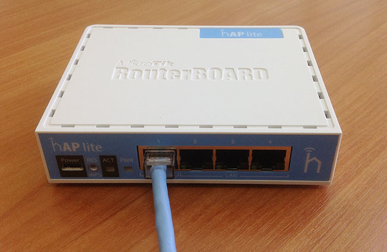
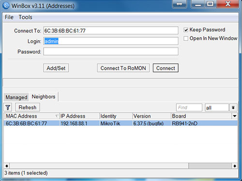

Как восстановить прошивку MikroTik с помощью Netinstall
10.08.2017
Если после обновления прошивки точка доступа или роутер MikroTik перестал загружаться, то его можно восстановить с помощью программы Netinstall. В этой статье мы расскажем, как это сделать.
Содержание:
Скачивание прошивки RouterOS и программы Netinstall
На официальном сайте www.mikrotik.com перейдите в меню Software - Downloads и скачайте прошивку RouterOS для вашего устройства.
Для этого найдите название вашего устройства или серию, к которой оно относится. Далее в столбце (Current) напротив строки Main package нажмите иконку загрузки. После этого вы должны скачать файл с расширением *.npk
Опуститесь в самый низ странички, скачайте и распакуйте программу Netinstall.
Настройка сетевой карты компьютера
Присвойте сетевой карте компьютера статический адрес, например, 192.168.88.21.
Откройте меню «Пуск» → «Панель управления» → «Центр управления сетями и общим доступом».
Перейдите в «Изменение параметров адаптера».
Нажмите правой кнопкой мыши на «Подключение по локальной сети» и выберите «Свойства».
Нажмите на «Протокол Интернета версии 4 (TCP/IPv4)» и кнопку «Свойства».
Выберите «Использовать следующий адрес», пропишите IP-адрес 192.168.88.21, маска подсети 255.255.255.0 и нажимаете кнопку «OK».
Отключение брандмауэра и антивируса
Отключите на компьютере брандмауэр и антивирус, чтобы они не блокировали программу Netinstall.
Чтобы отключить брандмауэр, откройте меню «Пуск» - «Панель управления» и выберите «Брандмауэр Windows».
Слева в меню нажмите на «Включение и отключение брандмауэра Windows».
Выберите «Отключить брандмауэр Windows» и нажмите кнопку «OK».
Антивирус можно отключить через его значок справа внизу экрана. Например, что отключить антивирус Avast, нажмите на значок правой кнопкой мыши и выберите в меню «Управление экранами Avast» - «Отключить до перезапуска компьютера».
Подключение MikroTik к компьютеру
Подключите сетевой кабель в первый ethernet порт роутера MikroTik и в сетевую карту компьютера. Исключение составляют модели RB1100 / RB1200 и роутеры серии CCR. Их нужно подключать в последний ethernet порт.

Восстановление прошивки с помощью Netinstall
По завершении установки появится сообщение "Installation finised successfully", информирующее о том, что прошивка прошла успешно. В конце прошивки на месте кнопки Install может появится кнопка Reboot. Нажмите ее, чтобы перезагрузить устройство.
Теперь подключите сетевой кабель в любой ethernet порт роутера кроме первого (или кроме последнего на моделях RB1100, RB1200 и роутерах серии CCR). Запустите программу Winbox, подключитесь к устройству и выполняйте настройку.

В конце не забудьте включить брандмауэр, антивирус и настроить на сетевой карте компьютера автоматическое получение IP-адреса.
Программа Netinstall не видит MikroTik
Если на вашем компьютере установлены программы VMware или VirtualBox, отключите их виртуальные сетевые интерфейсы. Из-за них программа Netinstall может не видеть устройство.
Также бывает, что одна версия программы Netinstall видит устройство, а другая нет. Если у вас Netinstall не видит устройство, то попробуйте разные версии программы. Например, попробуйте скачать Netinstall с номером версии, который соответствует старой прошивке RouterOS, стоявшей на устройстве до обновления.
Скачать старые версии программы Netinstall можно на официальном сайте www.mikrotik.com в меню Software - Download archive. Выберите необходимую версию RouterOS, найдите архив с программой и скачайте ее.